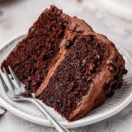

Moist Chocolate Cake Recipe
This easy chocolate cake recipe is perfect for any occasion. It’s incredibly moist and rich in chocolate flavor.
Ingredients:
- 1 and ¾ cups all-purpose flour
- 1 and ½ cups granulated sugar
- ¾ cup unsweetened cocoa powder
- 1 and ½ teaspoons baking powder
- 1 and ½ teaspoons baking soda
- 1 teaspoon salt
- 2 large eggs
- 1 cup whole milk
- ½ cup vegetable oil
- 2 teaspoons vanilla extract
- 1 cup boiling water

Instructions:
Preheat your oven to 350°F (180°C). Grease and flour two 9-inch round cake pans.
In a large mixing bowl, sift together the flour, sugar, cocoa powder, baking powder, baking soda, and salt.
Add the eggs, milk, oil, and vanilla extract. Beat with an electric mixer on medium speed for 2 minutes.
Stir in the boiling water (the batter will be thin; that’s okay).
Pour the batter evenly into the prepared pans.
Bake for 30-35 minutes or until a toothpick inserted into the center comes out clean.
Let the cakes cool in the pans for 10 minutes, then remove them from the pans and cool completely on wire racks.
Enjoy your delicious homemade chocolate cake!